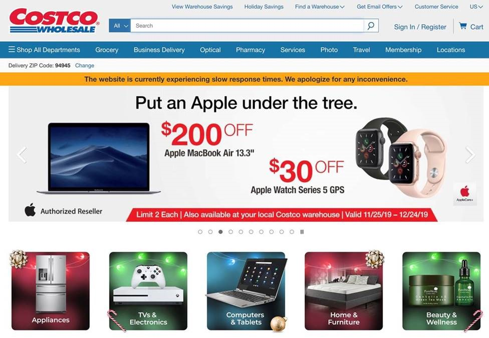

Case Study: Expanding the Costco Digital Experience

Project at Glance
- Length: 5 days
- Tool: Sketch
- Role: Independent project (I led all phases of the research and design process)
Background
Today, with the emerging need to meet the demands of using digital services, Costco has opened an online store front. Unlike Amazon or other ecommerce websites, Costco is fairly new to having a web presence. It is important to provide customers a digital experience that will engage them through multiple devices and platforms. As a former employee of a Costco, I felt compelled to design the Costco user experience, including the Smartwatch and Smart TV app.
Goal
The goal of this project is to design Costco's online and offline shopping experience for smartwatch, dashboard and wall.
Design Rationale

Desktop View

Mobile View

Mobile View 2
The current Costco website in desktop view and mobile app contains all products that are sold and distributed through Costco. There is a better need to expand on the webpresence to enhance the user experience for home and in-store shopping. For this project, I designed mockups of two digital products:
- Smart Watch app to assist with in store navigation and checkout processes.
- Smart TV app to support large screen shopping and querying order status through AI-driven conversational agents.
Smart Watch Interface
Wearables or Smartwatches are always-on devices that have the potential to offer customers a unique shopping experience in Costco warehouses. For instance, smart watches can assist users with in store navigation and guide them through the checkout process.
Onboarding Experience
I first designed the onboarding experience to welcome new users of the Smart Watch app. Through onboarding, users are introduced to the limited set of features that they can access through the watch.


Smart Watch Features
From the main menu, users can tap each icon to view their membership card, items on sale, current orders, and warehouse information. The most prominent use case of the wrist worn application would be to display their membership status in the warehouse. Instead of reminding themselves to bring their Costco membership card, users can simply display their membership ID on their watch upon entering the warehouse, and scan the QR code to make a purchase. Another use case is to select a warehouse that matches the user's current location and to show discounted items that are specific to that location.


{kind=link}
{kind=link}
{kind=link}
{kind=link}
{kind=link}
Smart TV Interface
With the increasing ubiquity of intelligent AI-driven conversational agents (such as Amazon Alexa, Google Home and Apple Siri) that connect to Smart TVs, it is now possible to expand the reach of consumers' shopping experience to the home. Users can make voice commands to view catalogued products in a large screen or query their recent order status.
Main Menu
The main menu consists of five navigable features that include viewing promotional items, delivery only items, items in cart, current and past orders, and account information.

Promotions
The promotions menu lets users navigate between promotional items in large view. Because Costco only features a limited set of products on their monthly promotional brochure, I reasoned that a TV app is a great platform to view this list. Thus I placed a large emphasis on showcasing various products through photos and videos as well as highlighted features for each item. Users can decide to make purchase directly from the TV based on their impression of the product.
Order Status
The order dashboard display is another highly anticipated feature that would support the customer's online shopping experience with Costco. It lets users view all orders via the buy again feature, open orders, online orders, cancelled orders and also leave feedback on the purchased product by simply clicking on the thumbs up or down icon. Users can access open orders to change their payment method, shipping address, and quantity of ordered items.

Project Reflections
As a former employee of Costco, I always thought it would be nice for Costco to provide an expanded digital presence and shopping experience through multi-device platforms. By creating the smartwatch and smart TV interface designs, I learned about the importance of responsive design.
When attempting to scale up (or down) the UI design depending on the device, I had to think more deeply about creating a layout that can flexibly work across a family of devices. For example, while designing the user interface for smartwatches, it was challenging to balance the amount of information with the size of interface elements to display on the small display screen. On the other hand, designing a smart TV interface was an entirely different experience from that of smartwatches. I had to think about which information to augment or amplify to capitalize on the vast screen real estate. Moving forward, I would like to expand Costco’s digital presence beyond form factor and pursue UX internationalization efforts to cater to its global audience.